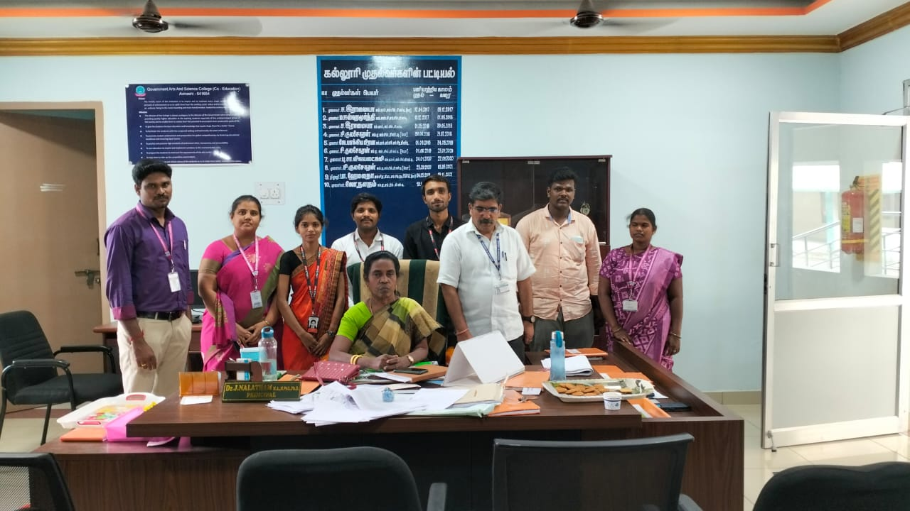
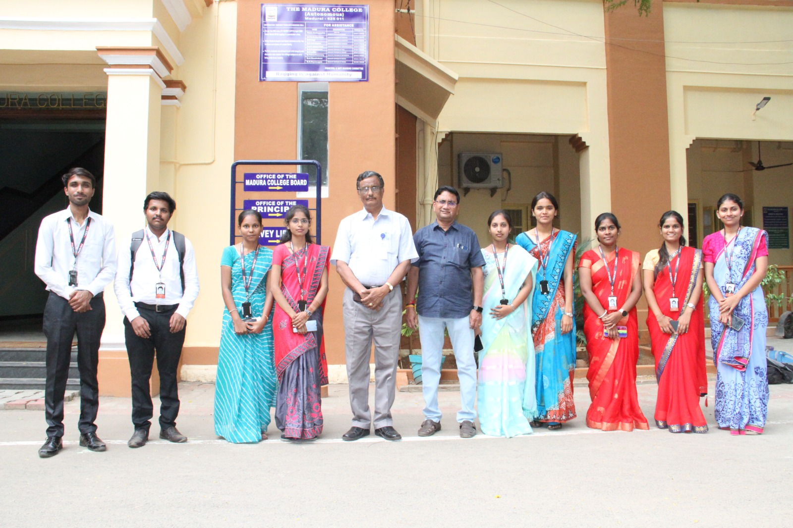
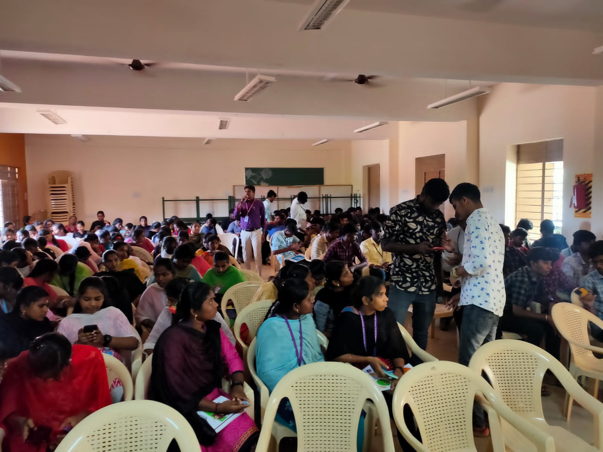
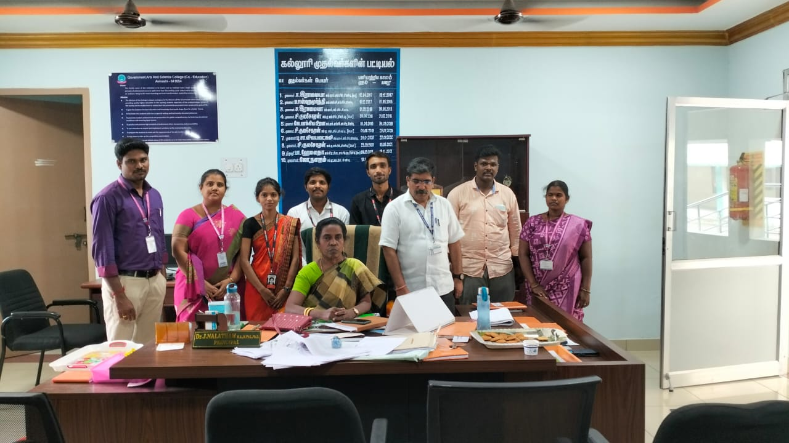
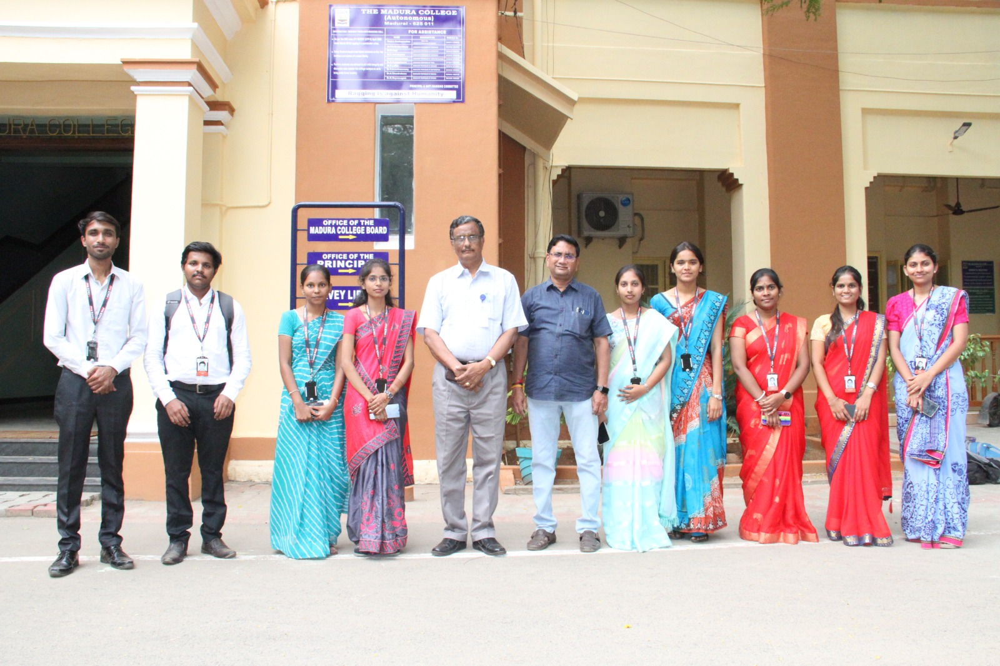
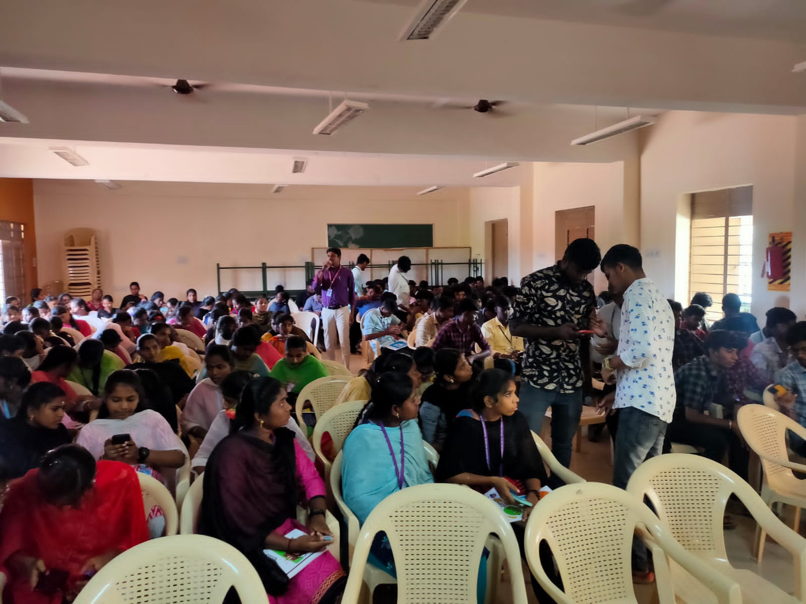

Hello! My name is Ankita Pawar, and I am currently a Data Structures and Algorithms (DSA) trainer at Faceprep.
Over the past year, I have had the privilege of guiding numerous students through their placement journeys, helping them secure positions in competitive companies.
In my role, I focus on delivering comprehensive training programs that cover a range of topics essential for technical interviews.
I specialize in data structures and algorithms, ensuring that my students not only understand the concepts but can also apply them effectively in real-world scenarios.
I have also conducted numerous workshops and training sessions tailored to specific companies, providing students with insights into the unique expectations and interview processes of potential employers.
My technical expertise extends beyond DSA. I am proficient in Java programming, which I often use as a foundation for teaching algorithmic concepts.
Additionally, I have a solid understanding of blockchain technology and cloud computing, allowing me to introduce students to cutting-edge topics that are increasingly relevant in today’s tech landscape.
I am passionate about empowering students with the knowledge and confidence they need to excel in their careers.
My approach emphasizes practical application, problem-solving skills, and a deep understanding of
technical concepts, ensuring that my students are well-prepared for their future endeavors.
 




